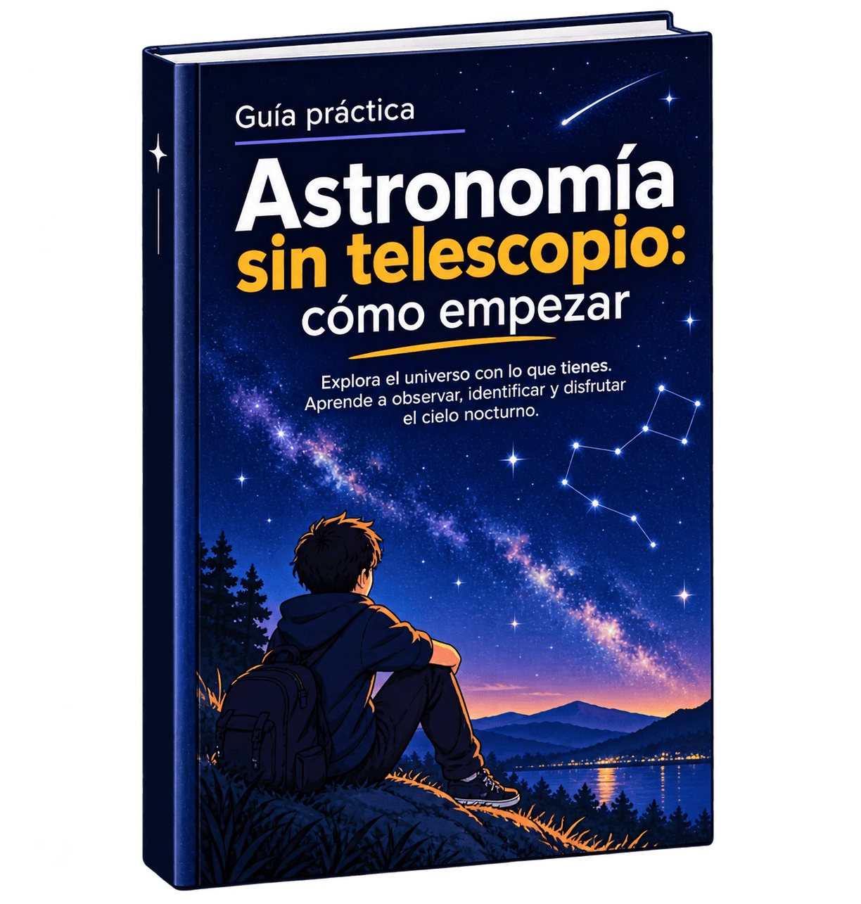
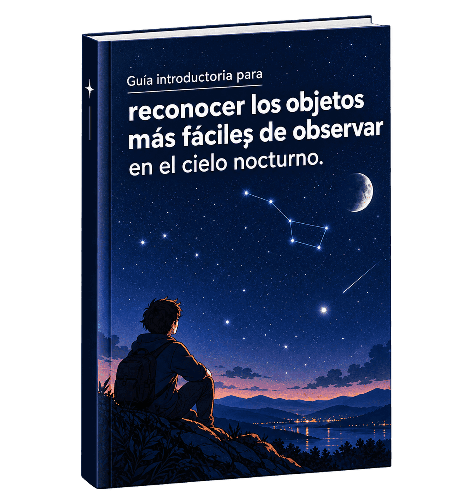

Mateo Ríos
Universo a Escala
Estudio el universo y comparto lo que voy aprendiendo. Astronomía, exploración espacial y fotografía del cielo para mentes curiosas.
Astrofotografía
Imágenes del cielo profundo capturadas por Universo a Escala.
-

Filamentos azules en una nebulosa carmesí -

Filamentos estelares -

Colores entre estrellas
Guías para explorar el universo
-

Astronomía sin telescopio: cómo empezar
-

El sistema solar en perspectiva
-

Objetos para observar en el cielo nocturno